02.大模型 Scaling Law(DONE)#
Author by：侯宇博
本节将以 OpenAI 的 Scaling Laws for Neural Language Models 这篇论文为主，探讨 Transformer 在大语言模型中损失值 Loss 对模型架构、模型大小、算力资源以及用于训练过程的数据这些因素的依赖关系。结尾将会辅以其他研究成果，介绍影响 LLM 预训练效果的重要因素。
1. 什么是 Scaling Law#
在预训练阶段，LLM 通常采用自监督学习方式进行训练。自监督意味着不需要对数据进行标注，即可用于训练模型。对于主流的自回归语言模型，预训练的核心任务是根据给定的文本序列，预测下一个可能出现的 token。
例如，下图中模型的输入是四个 tokens："I", "View", "ing" 和 "Single"。模型会输出下一个 token 的概率分布，这个分布展示了所有可能 token 作为下一个 token 的概率。最终，模型会选择概率最高的 token 作为输出。
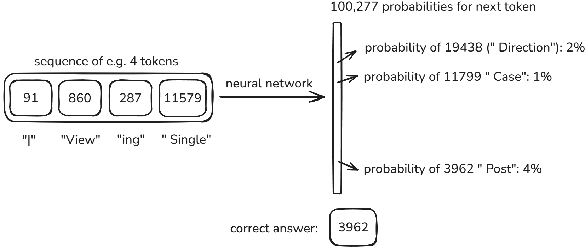
在这一阶段，模型性能的核心衡量指标是交叉熵损失。交叉熵损失量化了模型预测与真实标签之间的差异，其数值越低，表示模型预测的准确性越高，性能越好。它量化了模型学习真实语言分布的情况，一定程度反映了模型理解和生成语言的能力。
那么，我们如何才能训练出更强的模型？Scaling Law 给出了一个清晰的答案：堆资源。
模型的性能和三个关键因素是直接挂钩的，即：模型规模、数据量、计算量。只要持续增加这三者的投入，模型的性能就会可预测地变好。这让我们能提前计算出，要达到某个性能水平，大概需要多大的模型、多少数据和算力，从而为巨大的训练投入提供了明确的指导和信心。
2. 预训练 Scaling Law#
OpenAI 的 Kaplan et al.于 2020 年发表的论文Scaling Laws for Neural Language Models是 LLM 缩放定律领域的奠基性工作。该研究通过在 WebText2 数据集上训练 Transformer 模型，首次系统性地揭示了语言模型性能与模型规模、数据集大小和计算量之间的精确幂律关系。
该研究的三大核心发现如下：
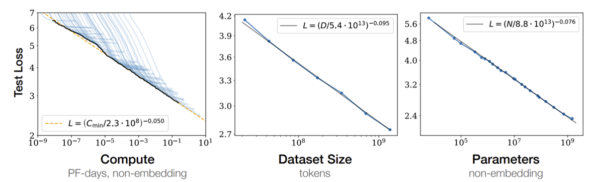
2.1 数据集大小#
上图第二张子图展示了 loss 与数据集大小的关系。如同所示，在不受其他因素限制下，性能随数据集大小 \(D\) 的增加而幂律提升。
其中， \(\alpha_D \approx 0.095, D_c=5.4*10^{13}\) 。
2.2 模型参数规模#
上图第三张子图展示了 loss 与数据集大小的关系。如同所示，在不受其他因素限制下，语言模型性能随非嵌入参数数量 \(N\) 的增加而幂律提升。非嵌入参数是排除了词汇和位置嵌入的模型参数，是真正在训练中用于学习数据分布的参数。
其中， \(\alpha_N \approx 0.076, N_c=8.8*10^{13}\) 。
2.3 训练计算量#
上图第一张子图展示了 loss 与数据集大小的关系。如同所示，在不受其他因素限制下，性能随优化分配的训练计算量 \(C_{\text{min}}\) 的增加而幂律提升，
其中， \(\alpha_C \approx 0.050，C_c=2.3*10^8\) 。
计算量 \(C \approx 6NBS\) 。其中 \(B\) 表示 batch size， \(S\) 表示训练步长。 \(L(C_{\text{min}})\) 的图与其他两个图的不同在于，其是由多个曲线的最低点相连得出的。
多个曲线就是不同 batch size 下，模型随训练步长的变化。这里在展示的是要让模型到达指定性能需要最少投入的计算资源。从另一面看， \(L(C_{\text{min}})\) 展示了在计算资源固定的前提下，模型性能能收敛到哪里。
在模型规模 \(N\) 确定的前提下，\(C\) 由 batch size \(B\) 和训练步长 \(S\) 影响。增大 batch size 能有效降低梯度估计中的随机噪声，使优化路径更为稳定且接近理论最优方向。
下图清楚地展示了一个现象：从黑点朝向中心点（目标）移动时，较大的 batch size 所指示的方向更接近中心点。
研究表明存在一个关键阈值，即最优 batch size，在此阈值之下，批量规模的增长与模型收敛速度呈正相关；而一旦超过此阈值，继续扩大批量带来的性能提升则趋于边际化。
因此，为最大化计算资源利用效率和训练时间价值，应当优先采用接近最优 batch size 的配置。
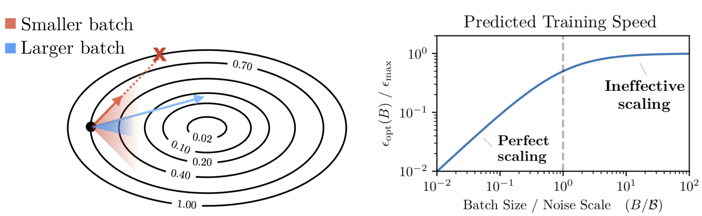
此外，如下图所示，在充分大 batch size 下，训练步长与模型性能间存在幂律关系，且此规律在不同参数规模的模型架构中均呈现一致性。
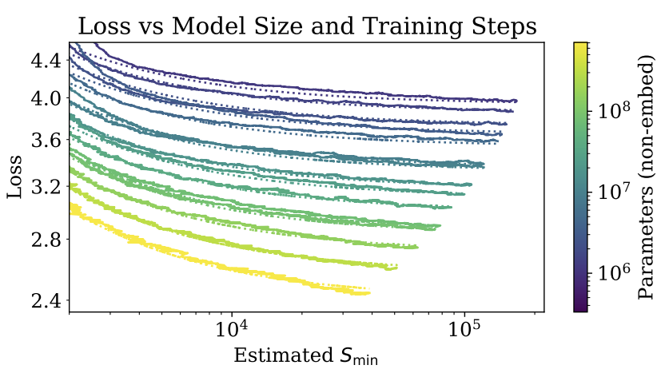
前面的结论成立有一个前提，就是不受其他因素限制，这在实际情况下很难成立。
在资源受限时，模型性能的持续提升依赖于模型规模 \(N\) 和数据集大小 \(D\) 的同步扩展。如果 \(N\) 或 \(D\) 固定而另一个持续增加，模型性能会在达到一定水平后呈现边际递减效应，提升速度显著减缓。
下图展示了在固定数据集大小后，模型性能随模型规模变化的关系。可以看到，在 \(D\) 为 21M 时，模型规模超过 \(10^7\) 后，性能就不再有显著提升。而在 \(D\) 为 22B 时，模型规模直到 \(10^9\) 后，性能依然在持续提升。
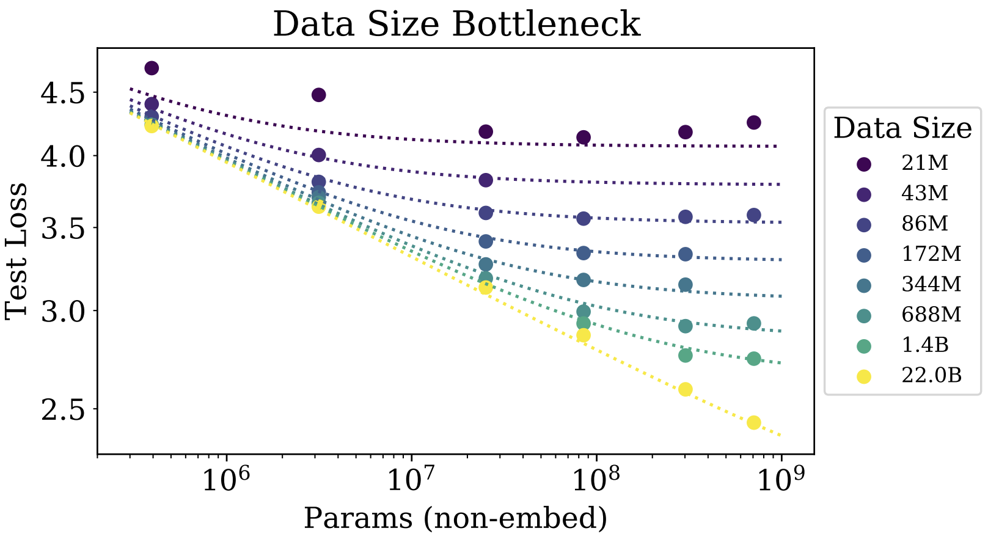
类似的，下图展示了在固定模型规模后，模型性能随数据集大小变化的关系。可以看到，在 \(N\) 为 393.2K 时，训练数据超过 \(10^8\) 后，性能就不再有显著提升。而在 \(N\) 为 708M 时，训练数据超过 \(10^{10}\) 后，性能依然在持续提升。
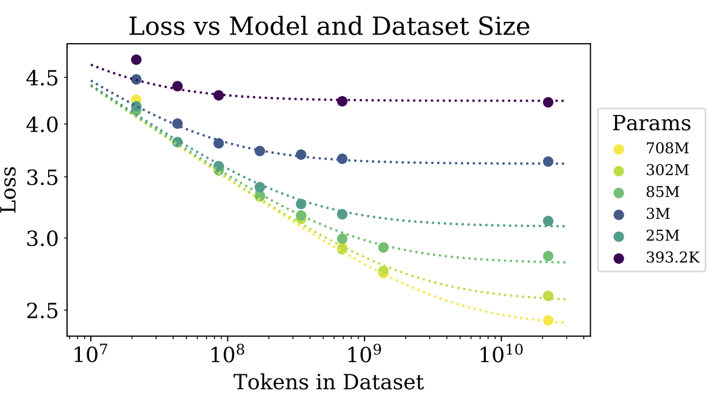
建议在给定 \(C\) 时，模型与数据应符合如下比例： \(N_{opt} \propto C^{0.74}, D_{opt} \propto C^{0.27}\) 。
此外，训练曲线（损失随训练步数的变化）遵循可预测的幂律，其参数大致独立于模型大小。这意味着通过外推早期训练曲线，可以大致预测模型在长时间训练后能达到的损失水平 。
另一个重要的发现是，大型模型比小型模型更具样本效率。它们能够以更少的优化步骤和更少的数据点达到相同的性能水平 。这意味着大模型能更有效地从数据中学习，从每个数据点中提取更多的信息。
如下图所示，深蓝色代表小模型，浅黄色代表大模型。可以看出，如果要达到相同的 loss，大模型比小模型需要更少的训练轮次（tokens processed）。
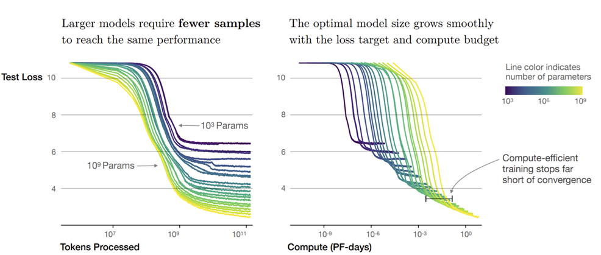
2.4 其他因素#
Kaplan et al.还讨论了其他可能影响模型性能的因素，包括：学习率、模型结构、上下文长度和数据分布偏移，发现这些因素的影响有限。
学习率
学习率和 batch size 是两个密切相关的超参数。通常，较大的 batch size 需要较大的学习率。 Kaplan et al.发现只要学习率不是太小且衰减不要太快，学习率对性能的影响并不强。
不过后续研究Predictable Scale: Part I, Step Law – Optimal Hyperparameter Scaling Law in Large Language Model Pre-training比较了不同的最优学习率和 batch size，并提出了自己的改进方案。
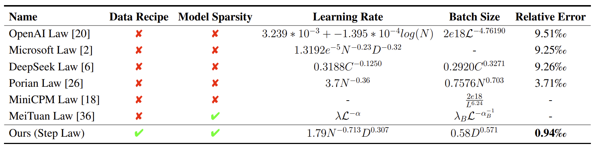
模型结构
当固定模型规模时，模型性能对包括深度、宽度、注意力头和前馈维度在内的模型结构的依赖性非常轻微。
需要注意的是，上述结论源于 dense 架构 Transformer 在下一个 token 预测任务上的表现。在实际应用中，注意力头的配置对模型性能有影响；对于 Mixture of Experts (MOE) 架构，专家数量的选择也会直接影响最终效果。
上下文长度
观察下图，除第一个 token 外，在不同位置的 token 的损失随模型增大而减小。这说明更大的模型在预测各个位置的 token 时都表现更好。第一个 token 的预测不遵循这一规律，可能因为缺乏前置上下文信息。
通过对比 Token 4/8 < Token 4/1024，发现在相同绝对位置上，较短上下文中的 token 损失更小。对比 Token 1024/1024 < Token 8/8，发现在相同相对位置上，较长上下文中的 token 损失更小。
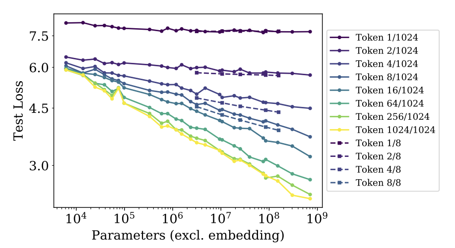
数据分布偏移
模型的训练数据的分布和测试数据的分布很可能是不一样的，这种情况叫数据分布偏移。此时测试数据属于域外数据。
Kaplan et al.发现模型在域外数据上的性能相比于训练集会出现固定幅度的下降，但整体表现仍大致与其在训练集上的性能成正比。如下图所示，模型是在 WebText2 上训练的，在其他数据集上测试时，loss 有一定程度的上移。
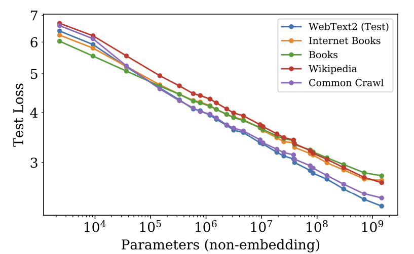
然而在真实场景下，源于分布偏移的知识缺失依然会对使用体验造成明显影响。
3. Chinchilla 定律#
论文Training Compute-Optimal Large Language Models进一步扩充了模型和数据规模，提出了对最优资源分配策略的修正。其核心发现是，对于给定的计算预算，模型参数和数据集应以大致相等的比例缩放，即 \(N_{opt} \propto C^{0.5}, D_{opt} \propto C^{0.5}\) ，而非 Kaplan et al. 建议的侧重模型参数。
如图所示，作者采用了三种不同方法来研究在固定的 FLOPs 预算下，应该如何权衡模型大小和训练标记数，并得出一个关键结论：当时的大型模型普遍存在训练不足的问题。这一发现也解释了为何在 2021 年，许多研究者在尝试复现 GPT-3 时未能取得理想的成果。
为了验证这一结论，作者用更多的训练数据训练了一个参数量更小的模型 Chinchilla (70B)。尽管 Chinchilla 的模型规模远小于 Gopher (280B)、GPT-3 (175B)、Jurassic-1 (178B) 和 Megatron-Turing NLG (530B) 等模型，但实验结果表明，它在众多下游任务中的表现反而更胜一筹。
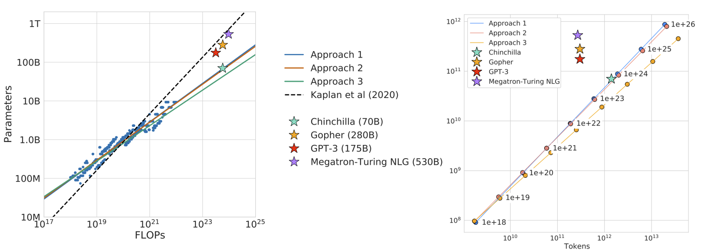
3.1 训练曲线包络#
第一种方法通过训练一系列不同规模（参数量从 7000 万到超 100 亿）和不同训练数据量（Token 数）的模型，绘制出训练损失与计算量（FLOPs）的关系曲线（见左下图）。在固定的计算预算下，各曲线的最低损失点（灰色点）构成了最优边界。通过分析这些最优点对应的模型大小（中下图）和训练数据量（右下图），作者得以拟合出最优模型规模和数据量与计算量之间的 Scaling Law。
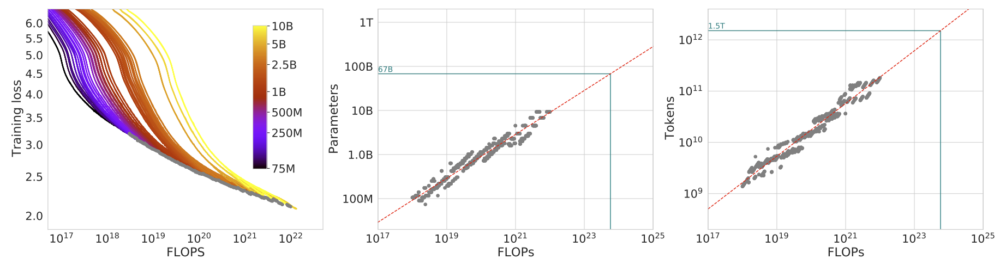
3.2 IsoFLOP 配置#
第二种方法更为直接。该方法在固定的计算量下，系统地探索模型规模与训练数据量之间的权衡关系——即用更多数据训练小模型，或用更少数据训练大模型。通过为每个计算量水平扫描不同的模型与数据组合，可以确定达到最低 loss 的最优配置点（见左下图）。与前一方法类似，通过分析这些最优点对应的模型规模（中下图）和数据量（右下图），研究者便可以拟合出相应的 Scaling Law。
左下图的每条彩色曲线代表一个固定的计算量，展示了在该计算量下，loss 随模型参数量变化的趋势。可以观察到，每条曲线都呈现出清晰的 U 形：随着模型参数量的增加，损失率先下降后又转为上升。这种现象揭示了一个关键的权衡：起初，模型规模的增益（更大的容量）主导了性能提升，使损失降低；但超过一个拐点后，由于计算预算固定，更大的模型必然意味着训练数据量的减少，训练不足的负面效应开始凸显，从而导致损失反弹。
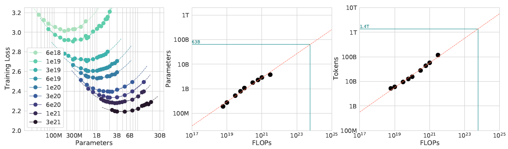
3.3 拟合参数化损失函数#
最后一种方法则试图直接拟合一个 loss 与数据量和模型规模的函数（见左下图）。根据图中的虚线可以绘制出上一个方法的 IsoFLOP 曲线。但可以看到拟合的结果不如上一个方法的好。
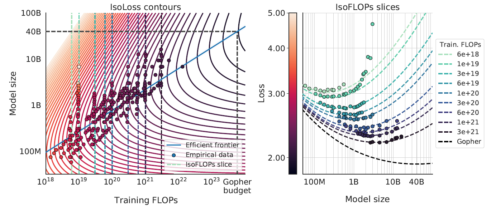
下表展示了不同方法的拟合结果，可以看出第三个方法的结果和前两个的不太一致。
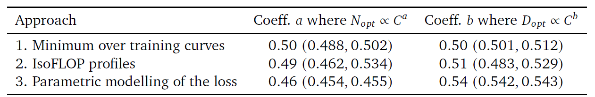
4. Emergence Abilities 涌现规则#
前文的 Scaling Law 揭示了模型性能随规模扩大而平滑、可预测地提升。然而，Emergent Abilities of Large Language Models 一文指出了另一种截然不同的现象：大语言模型的“涌现能力”（Emergent Abilities）。
所谓“涌现”，是指某项能力在小规模模型中尚不显现，但当模型规模突破某一临界点后，性能会突然出现非线性的、跃迁式的增长。由于这种不可预测性，我们无法简单地通过外推小模型的性能曲线来预见大模型可能具备的新能力。
4.1 少样本提示中的涌现能力#
如下图所示，在少样本提示中，预训练的语言模型被给予一个任务提示和示例并完成响应，而无需进一步训练或对其参数进行梯度更新。
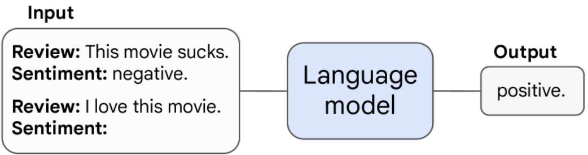
下图展示了模型在不同任务上随模型规模的性能变化，可以看到在突破规模的临界点后，表现大幅度提升。
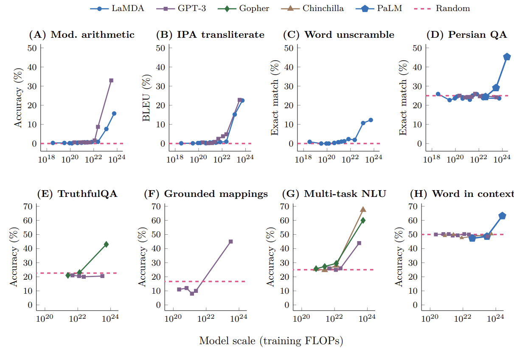
4.2 增强提示#
模型的涌现能力不仅体现在少样本提示上，也体现在某些增强性提示或微调技术的有效性上。如果一种技术只有在模型规模达到一定阈值后才能显著提升性能，那么这种技术本身的有效性也被视为一种涌现。
下图清晰地展示了这一点：无论是思维链提示（Chain-of-Thought）、指令微调（Instruction Tuning）还是模型校准（Calibration）等策略，它们对小模型的性能几乎没有助益，但一旦模型规模跨过临界点，便能带来显著的性能飞跃。
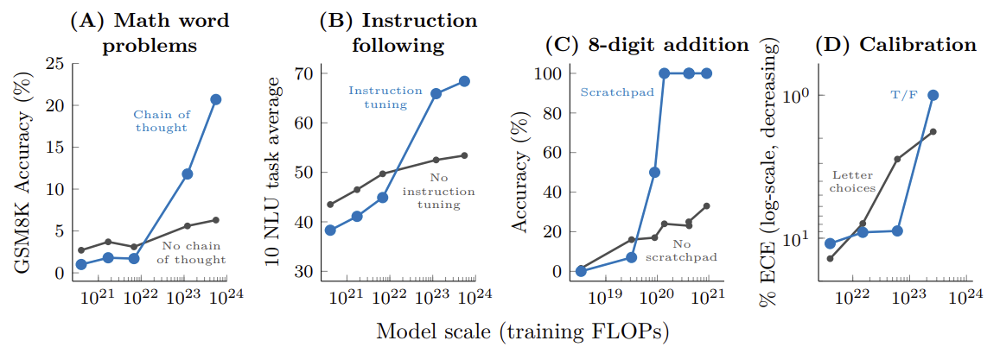
4.3 涌现现象的潜在解释#
关于为什么会出现涌现能力，作者提出了一个直观的猜想：某个多步推理任务需要 \(l\) 步计算，那么模型可能需要 \(O(l)\) 层的深度。同时，很自然地可以推测，更多的参数和更长的训练时间有助于模型记忆更多的知识。
5. 总结与思考#
本文系统性地探讨了大型语言模型领域的两大核心定律：Scaling Law 与 Emergence Abilities。Scaling Law 揭示了模型性能与模型规模、数据量及计算资源之间存在着可预测的幂律关系。Chinchilla 定律则在此基础上进行了关键修正，指出在固定计算预算下，模型与数据规模的同等扩展才是最优资源分配策略。
与 Scaling Law 的平滑可预测性相对，Emergence Abilities 描述了当模型规模突破某个临界点后，性能会大幅提升的现象。这两大定律共同构成了当前我们理解和构建大模型的基础：前者指导我们如何高效地分配有限资源以达到最佳性能，后者则揭示了通往更强人工智能的道路上充满着未知的可能性与惊喜。